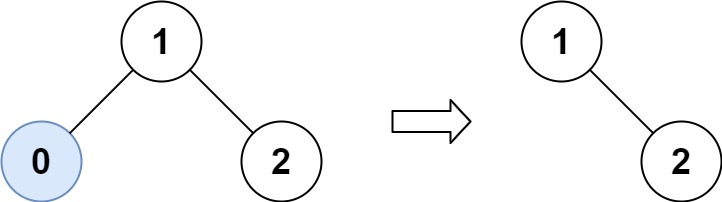
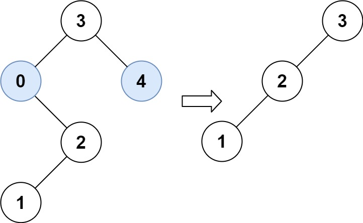

669. 修剪二叉搜索树
递归修剪：根太小就整棵扔掉左子树、用修剪过的右子树顶替；根太大对称处理；在界内就修剪左右后保留根。
思路
- 利用 BST 性质：
val < low时整个左子树都小于low，直接返回trimBST(root.right)，不用逐个看。 val > high对称：返回trimBST(root.left)。- 根在
[low, high]内：root.left/right分别接上修剪结果，相对结构不变。 - 空树返回
null；被剪掉的结点由 GC 回收，题目只要求返回新根。
图解
最优解
1class Solution {2 public TreeNode trimBST(TreeNode root, int low, int high) {3 if (root == null) return null;4 // 根太小：整个左子树都 < low，直接用修剪过的右子树顶替根5 if (root.val < low) return trimBST(root.right, low, high);6 // 根太大：整个右子树都 > high，直接用修剪过的左子树顶替根7 if (root.val > high) return trimBST(root.left, low, high);8 // 根在区间内：左右分别修剪后接回来，BST 性质不变9 root.left = trimBST(root.left, low, high);10 root.right = trimBST(root.right, low, high);11 return root;12 }13}题目
给你二叉搜索树的根节点 root ，同时给定最小边界low 和最大边界 high。通过修剪二叉搜索树，使得所有节点的值在[low, high]中。修剪树 不应该 改变保留在树中的元素的相对结构 (即，如果没有被移除，原有的父代子代关系都应当保留)。 可以证明，存在 唯一的答案 。
所以结果应当返回修剪好的二叉搜索树的新的根节点。注意，根节点可能会根据给定的边界发生改变。
示例 1：

输入：root = [1,0,2], low = 1, high = 2 输出：[1,null,2]
示例 2：

输入：root = [3,0,4,null,2,null,null,1], low = 1, high = 3 输出：[3,2,null,1]
提示：
- 树中节点数在范围
[1, 104]内 0 <= Node.val <= 104- 树中每个节点的值都是 唯一 的
- 题目数据保证输入是一棵有效的二叉搜索树
0 <= low <= high <= 104
题面取自力扣当前版本。
数据快照 2026-11-04。题面版权归力扣所有，本站点仅供本人学习使用，请勿对外发布。